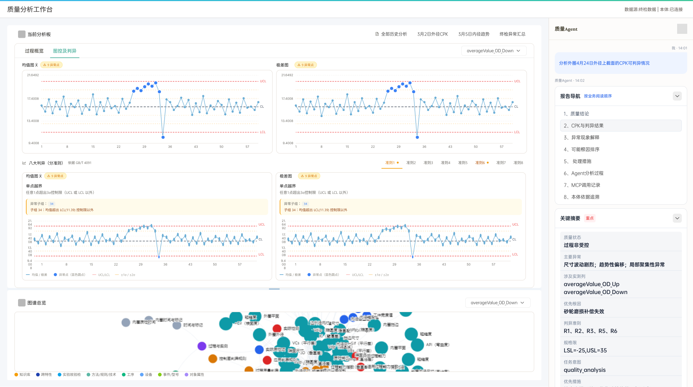
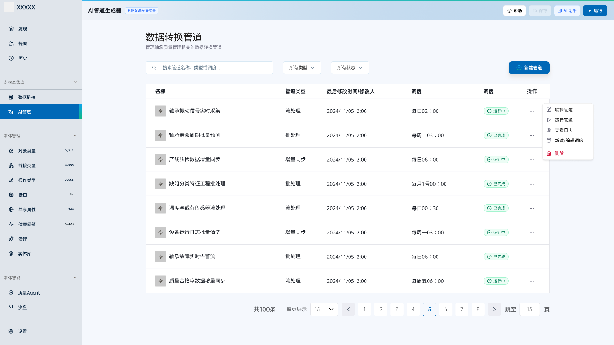
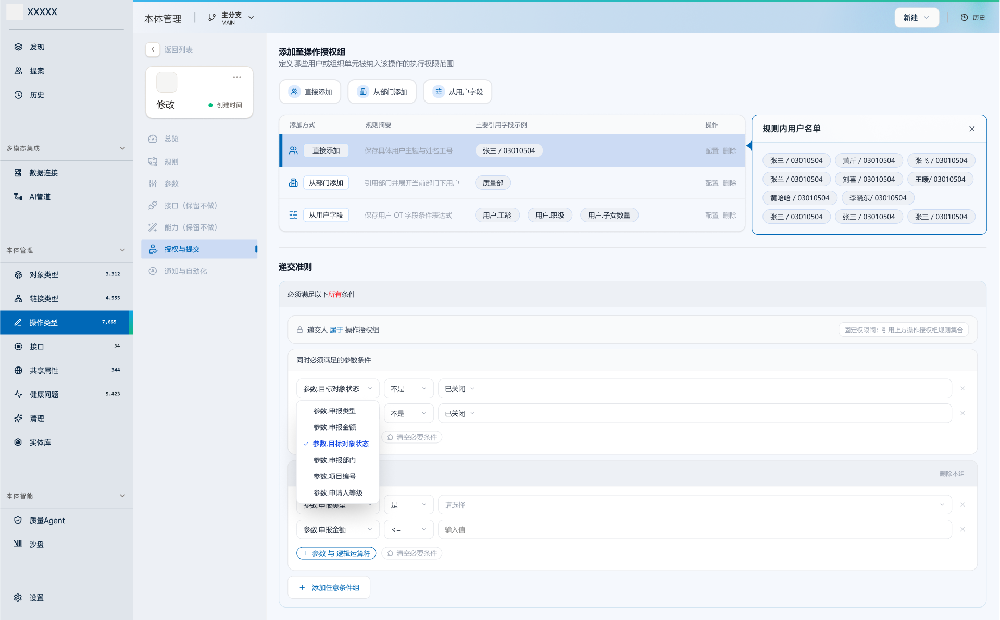
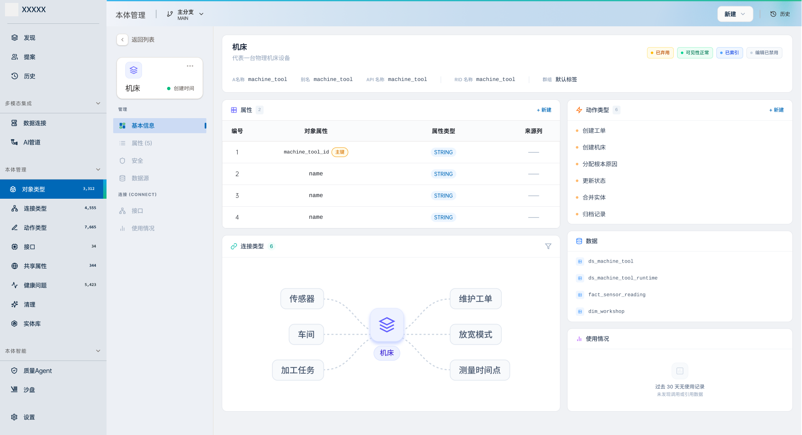
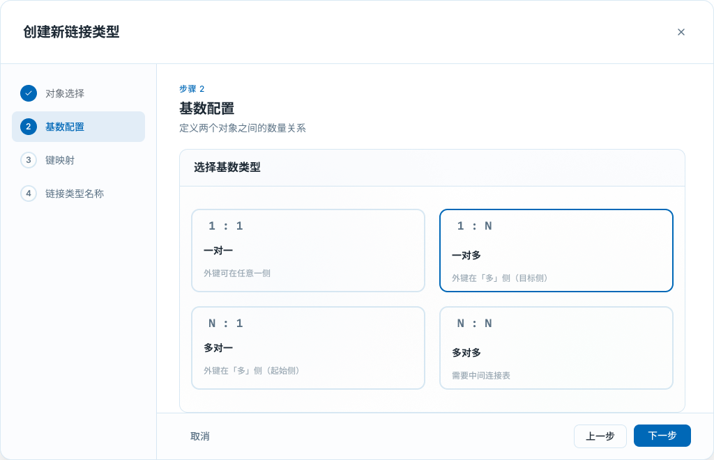
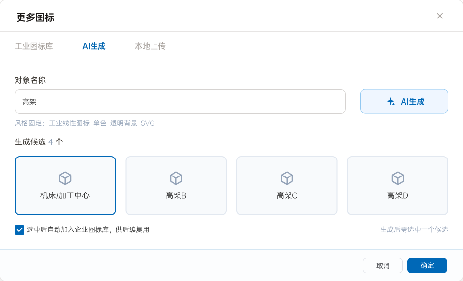

数据对不上
同一个概念散落在不同系统，口径不一，跨系统协同从源头断开。
01 / The Question
Primary Case · Industrial AI
面向工业场景的「数据 + 本体 + Agent」平台。铁路轴承制造质量是首个落地场景，成熟后扩展到更多工业业务。
AI 的一句结论，可能让一条产线停机。我做的，是把团队确定的人机边界落进每一层交互——让一线工程师始终能自己核对、甚至推翻机器。
下方界面为脱敏后的真实设计稿，其中数据均为示例。
质量状态
过程非受控02 / The Platform
这个平台要建立一套机器能理解、能执行的统一业务语义体系——一本“工业数据字典”，让不同软件、数据系统和 AI 说同一种普通话。
同一个概念散落在不同系统，口径不一，跨系统协同从源头断开。
只看数值、不理解对象和关系，AI 无法给出能进入业务的判断。
老师傅的经验难变成机器可计算、可执行、可复用的资产。
一份轴承检测数据的旅程
三层不是技术架构展示，而是一条责任链。每多走一层，机器获得更多理解；人的核验入口也必须同时被保留下来。
振动信号、几何尺寸、工艺日志进入同一条数据链。
机床、工单、轴承、材料与操作员被连接为机器能读懂的关系。
Agent 运行 Cpk、SPC 与判异；工程师沿数据与本体回查证据。
项目方向对标 Palantir Foundry / AIP，做工业质量场景本地化。
建设中目标，不是成果对象 ≥ 百类 · 属性 ≥ 千项 · 关系 ≥ 万组 · 字典响应秒级 · AI 推荐决策可解释性 > 90%
平台不是单点质量工具。质量 Agent 是第一个进入真实工厂的应用，底下的数据接入、本体管理与智能能力会继续支撑更多工业场景。
本次项目复盘聚焦
把“AI 给结论”重组为从结论、原因到原始证据的连续核验路径。
让数据、本体与 Agent 不再是三个割裂后台，而是一条能被人理解和接手的工作流。
03 / My Role
我是 6 人团队中唯一的交互设计师。产品负责 WHAT / WHY；我负责交互 HOW，并在评审中发现和修正不合理处。
结合 Palantir 文档、Agent 产品使用经验与 AI 工具，快速制作可交互原型，帮助团队对齐方向。
从流程、状态到高保真交付，几乎每个模块都走完同一条设计链路。
算法 demo 能算但不好用；我吃透业务后，重新设计了整个 Agent 的人机交互。
从功能机制到技术可行性验证，推动一个曾被判断“无法实现”的方案落地。
04 / Primary Evidence
算法工程师先做出了能算 Cpk、SPC 与判异的 demo。我重新设计了信息结构、三栏工作台与追问联动，让工程师能从结论一路查回数据。

右侧自然语言提问，左侧图表按问题动态变化；结果同步高亮中间的图谱节点，历史图表可回看。上方为基于已交付方案重构的脱敏交互界面。
一次分析，四个连续动作
不要求先选择图表或算法，先从真实问题开始。
均值图和极差图按查看习惯并列，异常点直接定位。
结论同步高亮相关实体，让原因不只停在文字里。
回到标准和数据点，而不是相信 AI 的语气。
原始 demo 把计算结果连续堆出来；重构后，信息按照人的判断顺序展开。算法没有变，用户理解和接手结果的方式变了。
一次提问，不再吐出一坨报告
目录可以跳转；工程师先看结论，需要时再逐层深入。分析过程、MCP 调用和本体依据全部保留，能一路追溯到底。
长报告不靠滚动记忆。用户随时知道自己正在看结论、根因还是调用记录，并可在八段之间跳转。
每次追问生成的新图表都会进入历史区，工程师可以回看前一次判断，避免对话把工作上下文冲掉。
业务用户先看结论；需要审计时再展开 Agent 分析、MCP 调用和本体依据，不把技术日志塞进主流程。
05 / The Foundations
产品方向由团队共同确定。下面只把已确认属于我的交互落地与结构化工作写成个人贡献；归属尚未逐条核实的部分保持中性。
同一个模块，两种完全相反的交互
这是沙盘推演里的典型取舍：候选集有限且错误隐蔽时，用结构化输入；组合无限但能审阅时，才让自然语言参与起草。
AI 管道使用自然语言起草，但可用字段常驻在输入区；生成结果进入可编辑画布，画布才是唯一事实来源。意图解析当前使用正则，不包装成 LLM。

这是我明确负责梳理的产品结构。抽象规则配置完后，界面直接显示命中用户预览，让配置者在保存前知道规则到底圈中了谁。

对象类型定义“有什么”，链接类型定义“怎么连”，操作类型定义“谁能做什么”。机器契约对人可见，核验链才不会在人机交界处断掉。


本体配置的三个核验入口
一对多与一对一使用不同配置结构，让违反约束的映射没有入口，而不是保存后再报错。
实体唯一编号不隐藏，人才能把 Agent 输出与工厂里的具体对象对上。
ri.ontology.main.object.bearing.000143权限规则不是一句抽象描述，保存前直接展示姓名、工号、部门与职级。
06 / What Transfers
AI 图标库是我全程主导的模块：先检索确定性资产，找不到才生成，生成结果审核后回收入库。系统越用，重复生成应该越少。
稳定、可控、可复用的主路径
只补足图库没有的长尾对象
一次生成变成下一次可复用资产
搜索结果、空状态、生成任务、审核状态、对象预览和资产回收共同组成完整闭环。方案一开始被判断无法实现，我借助 AI 拆解技术路径并与前端验证，推动它重新达成共识。

人定作用域，AI 在作用域内生成。
生成与执行之间，必须有不可跳过的人类决策点。
高风险有限枚举用结构化表单，自然语言只负责加速。
可解释性优先回到标准与原始数据，而不是模型自述。
失败和限制需要被看见，透明是信任的成本。
机器侧契约对人可见，人才能核验模型。
这些原则适用于任何“AI 结论会触发高成本动作”的场景。轴承，是它们第一次落进真实产品的地方。